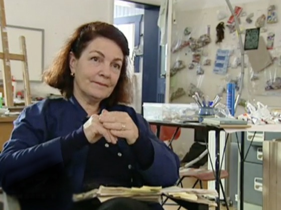

Artist Biography
Gretchen Albrecht has exhibited in New Zealand and internationally for more than 35 years. Her paintings were exhibited in Valencia, Spain as part of the exhibition Ultramarte at the Casa Museo Benlliure, and throughout New Zealand in the group exhibition Diaspora: Pluralism and Singularity and her survey exhibitions Illuminations at Auckland Art Gallery and Returning at Dunedin Art gallery.
Since the 1970s, Albrecht's work has evolved from the poured acrylic 'stained canvases' for which she first gained widespread recognition, into a pair of signature 'shaped-canvas' formats: the hemisphere (half circle) & the oval. These are shapes that Albrecht associates with particular meanings & states of mind. In the shaped-canvas paintings she has been producing since the early 1980s, resonant combinations of colour and geometry create images with a clear poetic impulse, in which references to landscape, family and the cosmos act as emotional points of departure.
Since 2000 Albrecht's artistic horizons have broadened to encompass large-scale stainless steel sculpture and have witnessed the inception of a series of multi-paneled rectangular paintings featuring an inner rectangular 'threshold' motif. In 2009 Albrecht began working on a new series of rectangular paintings featuring oval-shaped vortices of colour combined with slender horizontal geometric figures. The first of these paintings were exhibited in her exhibitions: Between Paint and Nature at Nadene Milne Gallery, Arrowtown, and Rosea at Mark Hutchins Gallery, Wellington. In 2010 Albrecht showed 5 in her solo exhibition Roses in the Snow, at Sue Crockford Gallery, Auckland. In 2014 Albrecht had her first solo exhibition with Two Rooms, Auckland. The paintings exhibited utilised the three stretcher shapes of hemispheres, ovals and rectangles (see images on exhibitions page) and ranged in scale from the intimate hemispheres on copper, to ovals and very large scale rectangles on canvas. Albrecht continues to develop her ideas using the three painting-stretcher shapes of hemisphere, oval and rectangle.